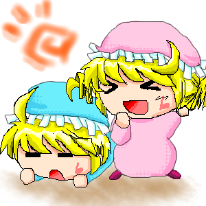
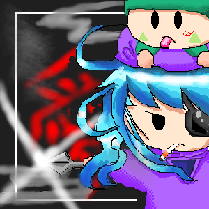
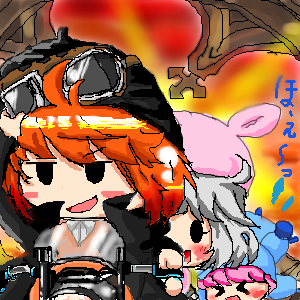

「ウィミ＆メイル」
・アンリ＆センリ双子と同い歳で幼馴染の、同じく双子兄妹。
・双子の兄メイル：意気地なしな「ヘタレ」。しっかりして居るのだが、いざという時に情けない。アンリが気になってる模様。妹のウィミとは喧嘩もあるけどとっても仲良し。
・双子の妹ウィミ：天然で元気で明るい、優しい外で遊ぶのが大好きな女の子。少々怖い物知らずな所があってセンリとメイルが手を焼いている。キレるとヤマネがお菓子を食べた時のようにおっかなく、かなり危険。キンタですら「大ガマのウィミ」と言って怯える程。
・ウィミとセンリは仲良しコンビだが、恋に発展するかは今だ不明。
・２人共、黄薔薇の花弁を溶かしたような綺麗な黄色い髪の毛に帽子にフリルとウィミはグルグルヘアーが特徴。
☆絡ませストーリー☆
・仲の良いダブル双子４人が偶然再会した。
・久々に遊んでいると、グルミの森の奥にある謎の洞窟の話題になる。ずっと前からあるのだが、何の洞窟なのかは分からない。
・怖い物知らずで人一倍好奇心があるウィミが先頭にたって、洞窟に入る。
・内心自分も怯えながらも、臆病なアンセンを守るべくヘタレに頑張るメイルくん。
・しかし、突然４人ははぐれてしまい・・・・！

「ティト」
・歳は？「女に歳を聞くのは野暮じゃないのか？」・・・。さいですか。
ミルモ達より上。超上。以上。
・恋愛方面になると何故か誤解がつきまとう。
・ハンゾーは必ず頭の上に乗って迷惑をかけている。かなり懐いてる模様。
・複雑な経緯で故郷を失い、数年前の記憶が無い。
・高レベルな忍術を難なくこなす。彼女の持つ忍術で一番高レベルな術は
「愛読心」。読心眼でティトの十八番。ただし禁術である。
・眼帯をしていて、煙草、喫煙、ニコチン中毒症状が特徴のくノ一である。
☆絡ませストーリー☆
・ティトがヤシチ達の修行場を暇そうに眺める。
・あまりに酷いので、手伝う。（その際ハンゾーが頭に乗る。邪魔である。
・流れで、ティトが手本を見せる事になるが、その前にヤシチに軽く挑発する。
・ヤシチは挑発に乗るごとく、ティトの“手本”を失敗させようと様々な手段で邪魔をする。
・しかし全て何も無いかのようにかわされてしまう。
・素早い上に厄介な術を多く得とくしているティトに結局何度やっても失敗させられない。しかし、これがどれだけ修行の一環になった事か、彼らは知る由もない。

「ミカン」
・パピィの事が好き。ムルモとはライバルでムルモの立ち位置を狙っている。
・歳はミルモやリルム達と同年代で、美少年。下駄箱に必ず手紙が入ってるタイプ。（本人はゴミ箱に処分している。
・特技・必殺は黒帯８段の拳銃使いで、射撃、狙撃、乱射、近距離射撃何でも得意。何でもアリ。リヴォルバータイプの拳銃を多く持っている。
・・・・実は絵が上手い。バイク乗りでもある。
・ティト同様に複雑な経緯で故郷を失った。過去に大きな事をやらかしたらしく、いろんな者に借りを作らせたままでいる。
・半目で黒いベレー帽に黒いロングコート、腰に拳銃という特徴的な格好。
・かなりのめんどくさがりだけど、キメる時はキメる。
☆絡ませストーリー☆
・ミカンは例によってパピィちゃんをツーリングデートに誘っています。
・ムルモも例によってミカンの言いなりにはならないでしゅ！とか言って付いてきましたが、後輪が長いとはいえ３人乗りは結構ギリギリ。
・座れるのは運転しているミカンと後輪に座るパピィ。ムルモは立って、空いてるスペースに足を乗せて、パピィに捕まります。
・肩を触られて照れるパピィ。それが分かると、急にムルモも恥ずかしくなってパピィから手を放します。
・落ちそうになってバイクの先端を掴んで「ほぇ〜〜〜〜！」